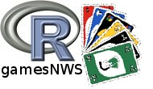

|
|
|  |
We used the rules discribed in wikipedia(engl).
And we started to implement some of the additional rules described in German wikipedia.
| Command | Function |
|---|---|
| get-info | shows some game-relevant information |
| say-uno | this command has to be issued, before the second-last card is played otherwise a penalty card is given |
| NO | if you don't want or can't play a card |
| (color)-(value) | color = {red, yellow, blue, green, rybg} value = {0:9, 2+, 4+, BREAK, BACK} |
The gamesNWS main page you can find here.